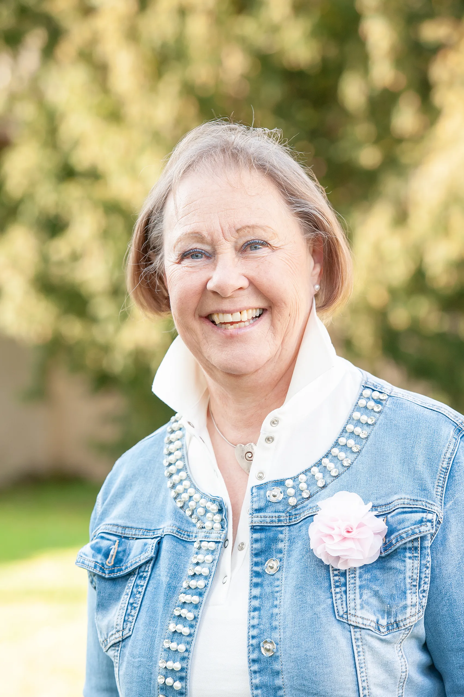

Für Albstadt und die Region ist die Talgangbahn der
Einstieg in die Verkehrswende mit positiven Folgen für den
Klimaschutz. Die Stadt Albstadt und wir als
Gemeinderät*innen setzten am 21.07.22 ein Zeichen für die
kommenden Generationen. Die SPD-Fraktion stimmte daher
geschlossen dem vorzeitigen Bau der Talgangbahn zu.
Aktuelles
Hier finden Sie alle neuen und relevanten Nachrichten von der SPD Albstadt. Ein einfacher Klick auf den Newsfeed genügt, um zu sehen, was wir im Detail tun. Darüber hinaus finden Sie hier alle zukünftigen Termine, zu denen Sie herzlich eingeladen sind.
Zu unserem Newsfeed
Anstehende SPD-Termine

Zur Talgangbahn
21.05.2022
Partei
Das sind die Mitglieder des SPD-Albstadt Vorstandes, die bei der
Jahreshauptversammlung im Juli 2022 gewählt wurden.

Fraktion
Das sind unsere Mitglieder, die erfolgreich bei den letzten
Kommunalwahlen waren. Nun gestalten sie die Politik vor Ort mit,
entweder im Gemeinderat Albstadt oder im Kreistag Zollernalb. Wollt
Ihr mehr zu unserer Arbeit wissen? Dann schaut bei der Rubrik „Neues
aus der Fraktion“ vorbei.
Gemeinderäte

Marianne Roth
Arzthelferin, verheiratet, 2 Kinder und „Grandma“
von 5 Enkeln
Flandernstr. 35
72458 Albstadt-Ebingen
72458 Albstadt-Ebingen
E-Mail: jumroth@t-online.de
Ein solidarisches und gerechtes Zusammenleben aller
Albstädter Bürger liegt mir besonders am Herzen. Als
Stadträtin seit 2003, habe ich mich mit Leidenschaft
für die Belange der Bürger eingebracht. Dazu will
auch weiterhin das mir entgegen gebrachte
Wahlvertrauen konstruktiv und engagiert zum Wohle
aller Bürger einsetzen. Nach wie vor halte ich mich
an den Leitsatz:
Wer den Bürger verstehen will, muss ihm auf
Augenhöhe begegnen.
- Ehrenamtliche Vertreterin des Herrn Oberbürgermeisters in Albstadt
- Mitglied im Ältestenrat des Gemeinderates Albstadt
- Mitglied im Ausschuss für Soziales, Kultur, Schule und Sport
- Aufsichtsrätin der asWohnbau, Beiratsvorsitzende der VHS
- SPD Gemeinderätin von Albstadt
- Vorsitzende der SPD Albstadt
- Vorsitzende der Quilting Ladies e.V.
- Mitglied im ökomenischen Roßberg-Verein
- Ehrenamtliche Tätigkeit im IntegrationsForum der Stadt Albstadt
- Mitglied im Migration Beirat des Zollernalbkreises
Martin Frohme
Sonderschullehrer i.R.
Tieringer Str. 35
72459 Albstadt-Laufen
72459 Albstadt-Laufen
E-Mail: MartinFrohme@t-online.de
Seit 42 Jahren bin ich Mitglied des Gemeinderats
Albstadt. Im Technik und Umweltausschuss setze ich
mich seit Jahren für die Belange des Umweltschutzes
- Energieeinsparung der städtischen Immobilien,
möglichst geringer Flächenverbrauch - Innen- vor
Außenbebauung und Fotovoltaik auf möglichst vielen
Immobilien und Freiflächen. Der Mensch steht im
Hinblick auf Landschaftsschutz und Umweltschutz
immer an vorderster Stelle. Zum Beispiel für die
Lärmbelästigung und Abgasbelastung in der
Ortsdurchfahrt Lautlingen, hat eine Ortsumfahrung,
für die ich seit mehreren Jahrzehnten gekämpft habe,
erste Priorität. Im Aufsichtsrat der Albstadtwerke
und der Ferngasgesellschaft Albstadt-Gammertingen
engagiere ich mich für eine sichere Wasser- und
Energieversorgung, was in den letzten Monaten immer
wichtiger geworden ist. Als dienstältester
Gemeinderat bin ich stets ein offener
Ansprechpartner gewesen, der zuhören kann und die
Anliegen der Mitbürgerinnen und Mitbürger tatkräftig
vertritt.
- Mitglied im Technik & Umwelt Ausschuss
- Aufsichtsratsmitglied bei den Albstadtwerken
- Ferngasgesellschaft Albstadt-Gammertingen
- Dienstältester Gemeinderat
Lara Herter
Duale Studentin
Albert-Sauter-Straße 14
72461 Albstadt-Onstmettingen
72461 Albstadt-Onstmettingen
E-Mail: lara-herter@gmx.de
Politik wird halt in Stuttgart und Berlin gemacht?
Von wegen! Was zu verändern geht am besten direkt
vor der Haustür, hier in Albstadt. Deshalb bin ich
leidenschaftlich gerne Gemeinderätin, setze mich für
attraktive Innenstädte und Ortskerne, für ein buntes
Kulturleben, für gute Bus- und Bahnverbindungen ein.
Als eine der jüngsten Kommunalpolitikerinnen liegt
es mir am Herzen, dass sich in Albstadt alle
Generationen wohlfühlen.
- Mitglied im Ausschuss für Technik und Umwelt
- Mitglied im Beirat der Musik- und Kunstschule
- Mitglied im Arbeitskreis Städtepartnerschaft mit Chambéry
- Jüngstes GR-Mitglied
Frank Hipp
Fachkrankenpfleger und stv.
Gesamtbetriebsratsvorsitzender Zollernalb
Klinikum
Am Westbahnhof 6
72458 Albstadt-Ebingen
72458 Albstadt-Ebingen
E-Mail: f.hipp@t-online.de
Seit 2007 Stadtrat in Albstadt und seit 2005
SPD-Mitglied, damalige Motivation das klare Nein von
Kanzler Schröder zum Irakkrieg.
Was hat mich bewogen sich kommunalpolitisch zu
engagieren? Zum einen hat mich Politik und auch
Geschichte schon seit früher Kindheit sehr
interessiert. Die Ära Helmut Schmidt war für mich
persönlich sehr prägnant und auch die 70 und frühen
80 Jahre mit der Entspannungspolitik und der Krönung
der Widervereinigung von Gesamtdeutschland. Seit dem
Berufsleben natürlich die deutsche
Gesundheitspolitik und als Gewerkschaftsmitglied bei
Verdi sind mir die Arbeitsbedingungen meiner
Kolleginnen sehr wichtig. Zum anderen natürlich die
Verbindung zur Heimatstadt und die Möglichkeit
gestalterisch tätig zu werden. Die Arbeit in unserer
Fraktion macht sehr viel Freunde.
In meiner Freizeit bringe ich mich im Freizeitclub
Handicap Albstadt mit ein und kann hier sinnvolle
Dienste für Menschen mit Handicap leisten.
- Mitglied im Finanz- und Verwaltungsausschuss
- Abwasserverband "Oberes Eyachtal"
- Gemeinsamer Ausschuss für die vereinbarte Verwaltungsgemeinschaft Albstadt/Bitz
Kreisrat
Martin Frohme
Sonderschullehrer i.R.
Tieringer Str. 35
72459 Albstadt-Laufen
72459 Albstadt-Laufen
E-Mail: MartinFrohme@t-online.de
Seit 33 Jahren bin ich Mitglied des Kreistags im
Wahlkreis Albstadt. Im Technik und Umweltausschuss
setze ich mich besonders für die Belange des
Umweltschutzes ein, sei es bei der Abfallbeseitigung
Müllvermeidung und dem Ausbau der Wertstoffzentren.
Die Umweltbelastung der Zementfabrik Holcim habe ich
mehrfach wegen veralteter Abgasfilter beanstandet.
Ebenso trete ich für den Ausbau der
Regionalstadtbahn, der Zollernalbbahn mit der
Talgangbahn ein. Hier kann ich meine Ideen auch als
Mitglied im Zweckverband Regionalstadtbahn
einbringen. Im Aufsichtsrat des Zollernalb Klinikums
engagiere ich mich seit langem für die Zentralklinik
zwischen den bevölkerungsreichsten Mittelzentren
Albstadt und Balingen. Dort bin ich auch im
Bauausschuss der Zollernalbklinik. Seit Beginn
dieser Wahlperiode 2019 bin ich
Fraktionsvorsitzender der SPD im Kreistag
- Fraktionsvorsitzender seit 15.07.2019
- Mitglied im Ausschuss für Umwelt und Technik
- Mitglied im Aufsichtsrat des Zollernalb Klinikums
- Mitglied im Bauausschuss der Zollernalb Klinikums
- Mitglied im Zweckverband Regionalstadtbahn
News
Downloads

Zur Talgangbahn
21.05.2022
Für Albstadt und die Region ist die Talgangbahn der
Einstieg in die Verkehrswende mit positiven Folgen für
den Klimaschutz. Die Stadt Albstadt und wir als
Gemeinderät*innen setzten am 21.07.22 ein Zeichen für
die kommenden Generationen. Die SPD-Fraktion stimmte
daher geschlossen dem vorzeitigen Bau der Talgangbahn
zu.
Historie
In den ehemals selbstständigen Orten Albstadts ist die
Sozialdemokratie seit den 1860er Jahren urkundlich erwähnt. Auf
diese traditionsreiche Geschichte der SPD in unserer Stadt sind wir
stolz. Viel wurde schon durch uns erreichen und bewegen noch mehr
möchten wir umsetzen. Im Folgenden können Ihr entweder die gesamte
Geschichte unsere Partei am Stück mit all ihren Höhen und Tiefen
nachlesen oder gezielte bestimmte Zeiträume auswählen.
Zeitachse kommunaler Persönlichkeiten
1965
1970
1975
1980
1985
1990
1995
2000
2005
2010
2015
2020
2025
Nils Maute
Parteivorsitzende
2022 bis heute

Marianne Roth
Parteivorsitzende
2018 bis heute
Fraktionsvorsitzende
2019 bis heute

Hendrik Dahlhoff
Parteivorsitzender
2016 bis 2018

Hans-Martin
Haller
Oberbürgermeister
Albstadt
1991 - 1999
Landtagsabgeordneter
im Wahlkreis 63
2001 - 2016

Rainer Günther
Parteivorsitzender
1985 - 1997
Fraktionsvorsitzender
1977 - 2009

Martin Frohme
Parteivorsitzender
1979 - 1983
Fraktionsvorsitzender
2012 - 2014

Norbert Fritsch
Parteivorsitzender
1975 - 1979

Erich Meier
Fraktionsvorsitzender
1975 - 1977

Horst Kiesecker
Bürgermeister
Tailfingen
1966 - 1975
Landtagsabgeordneter
im Wahlkreis 63
1991 - 1999
1992 - 1996